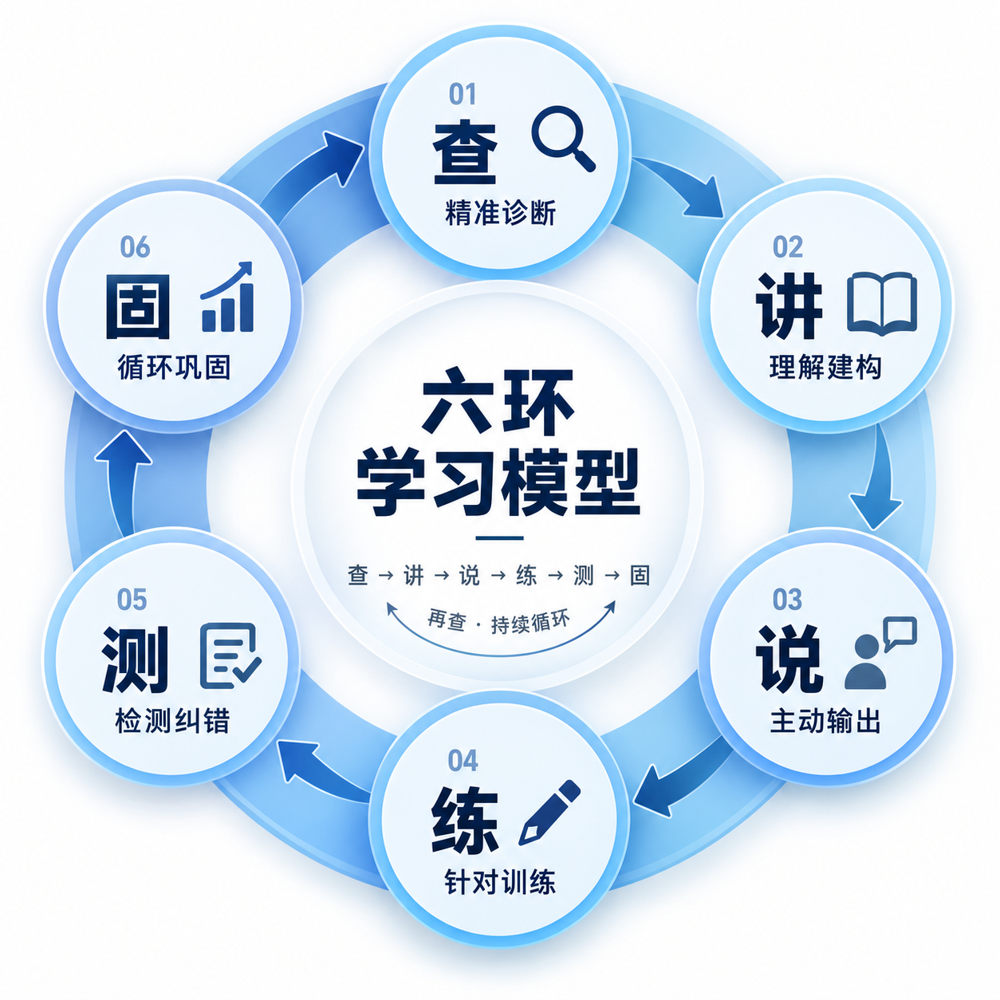

先问原因
孩子卡在哪里？
把成绩背后的学习困难找具体。
鼎伴学 · 数理化1v1伴学
揭秘鼎伴学1v1数理化科学提分的底层逻辑
从家长熟悉的困惑说起，讲清原因、学习方法和每一步的服务价值。
从家长熟悉的困惑开始
“孩子报过班，也请过一对一。”
“钱没少花，课没少上。”
“成绩就是上不去。”
先问原因
把成绩背后的学习困难找具体。
再看方式
根据每个孩子的情况调整学习安排。
最后看过程
讲清六环做什么，怎样检查学习表现。
先了解具体原因，再确定讲什么、怎样练、如何继续跟进。
像看病先了解情况，学习也先看清问题
概念没理解
回到概念，用简单例子把“为什么”讲明白。
方法不会选
练习找条件、选方法，说明选择的依据。
独立完成有困难
逐步减少提示，观察卡在哪一步，再补那一步。
过程与考试失分
检查具体失误，安排相应的规范练习与限时训练。
学情诊断，就是看清孩子哪里不会、为什么错、哪一步还需要帮助。

鼎伴学六环学习模型
有问题，就再查一遍，继续循环。
第一环 · 查
教学演示 · 题目
3(x − 2) = 12
孩子的示例作答（有错误）
3x − 2 = 12
观察：括号内的第二项没有乘到 3。
同一道错题，可以通过追问找到更具体的学习任务。
一个容易理解的生活例子
学开车时，教练把方向盘、刹车和后视镜讲清楚后，学员还需要实际训练。
先听明白
理解教练讲的方法，知道每一步要做什么。
学习中：教练解释知识与方法。
自己说清
用自己的话表达思路，让不清楚的地方有机会显现。
学习中：孩子讲一遍为什么。
自己动手
实际操作，遇到问题再接受指导、继续练习。
学习中：独立完成，再换题检查。
把教练讲过的内容，逐步变成孩子自己能完成的事情。
第二环 · 讲 / 第三环 · 说
教练讲：把关键道理解释清楚
3(x − 2)
= 3 × x − 3 × 2
= 3x − 6
讲到孩子能理解的地方，再继续下一步。
孩子说：用自己的话解释依据
“因为 3 也要乘括号里的负 2，所以这一项是负 6。”
听孩子怎么解释，可以继续发现哪些地方需要帮助。
孩子解释得清楚后，再通过自己做题，继续检验理解。
第四环 · 练
像练羽毛球，先观察和纠正挥拍动作，再安排相应训练。
概念还没掌握
例如先完成去括号，观察是否能把每一项都乘到。
方法还不熟悉
让孩子自己判断先做什么，并把过程写清楚。
基础已经能独立完成
例如从 3(x − 2) 换成 2(x − 3)，再逐步增加变化。
需要提高综合表现
同时观察审题、计算、步骤规范和时间安排。
根据薄弱点选题，边练边检查，再根据结果调整难度与数量。
第五环 · 测
撤掉提示
收起例题与解题过程，让孩子自己读题、选方法并完成。
观察：自己能做到哪一步。
换个条件
改变数字、条件或问法，观察孩子能否识别并运用方法。
观察：能否理解题目变化。
隔段时间
结合学习安排再次检查，观察哪些内容保留、哪些还需复习。
观察：掌握情况是否保持。
检查解题过程：哪里错了、为什么错、下一次怎样检查，再决定接下来练什么。
第六环 · 固
把独立完成情况与待巩固内容，作为后续复习的起点。
结合学情安排类似题，检查还记不记得；再次出错，就重新找原因。
继续练习和复测，观察原来的错误是否减少、方法能否保持。
复习什么、什么时候再查，都根据孩子的实际掌握情况调整。
为什么采用1v1伴学
基础理解还需要帮助
根据孩子的理解情况，调整解释方式与推进速度。
离开提示就卡住
给独立思考和练习的时间，观察具体停在哪一步。
同类错误反复出现
看清原因，安排相应的纠错、复习和后续检查。
已经熟悉基本方法
结合实际表现，调整练习难度和时间安排。
共同的六环，配合各自的学习起点、练习难度与复习安排。
同一套学习思路，用到不同学科
数学
从一道错题找卡点，讲清依据，让孩子自己说明并独立完成。
再换条件，观察方法能否继续运用。
物理
先弄清情境、已知量与单位，再解释适用条件和解题思路。
换一个情境，让孩子重新分析。
化学
结合具体知识，梳理概念、反应条件与判断依据，再独立练习。
改变题目条件，检查理解和判断。
把“这科不好”，逐步落实到一个能解释、能练习、能检查的具体问题。
记录与反馈 · 贯穿六环
| 今天的卡点 | 去括号时，漏乘了括号内的第二项。 |
|---|---|
| 本次学习 | 解释分配律，让孩子说明依据，再独立练习。 |
| 独立完成情况 | 简单去括号题能独立完成，带负号的变式仍需提示。 |
| 后续安排 | 先复测本次内容，再根据结果补充带负号的练习。 |
家长能看见进步，也能看见仍需帮助的地方。
把每一步的价值讲清楚
起点与卡点清楚，讲什么、练什么都有选择依据。
听完后自己解释、自己做，教练能继续观察理解情况。
撤掉提示、换题、后续复测，让困难有机会被发现。
根据记录安排复习与后续任务，形成连续的学习过程。
每一步都有明确动作，学习表现有记录，后续调整有依据。
学习过程如何连接到提分
把“数学不好”细化为具体的概念、方法、运算或过程问题。
能解释、能独立做，再通过变式和后续复测观察掌握情况。
结合综合练习与实际考试，检验能否把所学转化为相应得分。
每次学习推进一个具体问题，逐步积累更扎实的知识与方法。
成绩还受学习基础、投入、考试内容与发挥等因素影响。实际变化需要持续观察，具体提分幅度因人而异。
从学习过程，理解伴学服务的价值
看得见的变化
例如能独立解一道方程，知道电路题先分析什么，能检查化学方程式。
把变化落到具体知识与能力。
看得见的过程
结合课堂练习、孩子的表达、课后反馈、错题复测和阶段检查了解。
让学习表现留下可回看的记录。
接得上的安排
说明还需加强的地方，以及后续讲解、练习和复测的安排。
让下一次学习回应这一次的发现。
讲清解决了什么、孩子做到哪一步、下一步怎么安排，服务价值就更具体。
从孩子眼前的一步开始
带上最近的试卷或一道没弄懂的题。课后，家长可以围绕下面几个问题了解情况：
看看卡点是否找准，任务是否具体。
看看自己的表达、练习与检查情况。
看看后续安排是否回应了实际困难。
听听孩子的感受，看看具体的学习表现，再决定下一步。